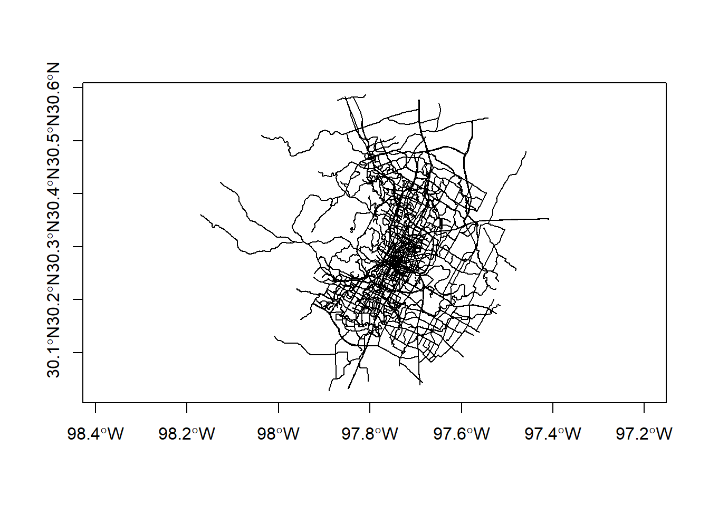

Chapter 4 Vector data with sf

Figure 4.1: Sticky geometry with sf
sf makes use of a couple key libraries that are the foundation for most open source geospatial software

Figure 4.2: Source: https://www.r-spatial.org/r/2020/03/17/wkt.html
sf is an implementation of Simple features, an open standard developed and endorsed by the Open Geospatial Consortium (OGC). Simple Features is a hierarchical data model that represents a wide range of geometry types - it includes all common vector geometry types (but does not include raster) and even allows geometry collections, which can have multiple geometry types in a single object. From the first sf package vignette we see:

The big difference between sf and sp is that sf uses S3 classes rather than S4 as sp does. Simple features are simple data.frame objects that have a geometry list-column. The simple feature model will be familiar to those who use PostGIS, MySQL Spatial Extensions, Oracle Spatial, the OGR component of the GDAL library, GeoJSON and GeoPandas in Python. Simple features are represented with Well-Known text - WKT - and well-known binary formats.
Just as in PostGIS, all functions and methods in sf are prefixed with st_, which stands for ‘spatial and temporal’. An advantage of this prefixing is all commands are easy to find with command-line completion in sf.
There is extensive documentation, blog posts and vignettes available for sf here:
Simple Features for R. Additionally, see r-spatial blog which has numerous announcements, discussion pieces and tutorials on spatial work in R focused.
A very handy page, if you’re already familiar with the sp ecosystem, is the Migrating page on the sf GitHub wiki.
Here’s a quick synopsis of available methods in sf:
## [1] $<- [ [[<-
## [4] aggregate as.data.frame cbind
## [7] coerce dbDataType dbWriteTable
## [10] identify initialize merge
## [13] plot print rbind
## [16] show slotsFromS3 st_agr
## [19] st_agr<- st_area st_as_sf
## [22] st_bbox st_boundary st_buffer
## [25] st_cast st_centroid st_collection_extract
## [28] st_convex_hull st_coordinates st_crop
## [31] st_crs st_crs<- st_difference
## [34] st_filter st_geometry st_geometry<-
## [37] st_interpolate_aw st_intersection st_intersects
## [40] st_is st_is_valid st_join
## [43] st_line_merge st_m_range st_make_valid
## [46] st_nearest_points st_node st_normalize
## [49] st_point_on_surface st_polygonize st_precision
## [52] st_reverse st_sample st_segmentize
## [55] st_set_precision st_shift_longitude st_simplify
## [58] st_snap st_sym_difference st_transform
## [61] st_triangulate st_union st_voronoi
## [64] st_wrap_dateline st_write st_z_range
## [67] st_zm transform
## see '?methods' for accessing help and source codeLet’s start exploring sf using some data included in the awra2020spatial package.
## Simple feature collection with 6 features and 2 fields
## geometry type: MULTILINESTRING
## dimension: XY
## bbox: xmin: -97.75811 ymin: 30.26214 xmax: -97.75198 ymax: 30.28477
## geographic CRS: WGS 84
## ROUTE_CODE ROUTE_NAME geoms
## 1 43.0023 LAMAR BLVD N MULTILINESTRING ((-97.75198...
## 2 43.0023 LAMAR BLVD N MULTILINESTRING ((-97.75198...
## 3 43.0028 LAMAR BLVD S MULTILINESTRING ((-97.75711...
## 4 43.0028 LAMAR BLVD S MULTILINESTRING ((-97.75711...
## 5 43.0028 LAMAR BLVD S MULTILINESTRING ((-97.75775...
## 6 43.0028 LAMAR BLVD S MULTILINESTRING ((-97.75775...Let’s break down what we just saw in bike paths, which is bike paths in Austin - from the first sf package vignette:

We can see:
- in green a simple feature: a single record, or data.frame row, consisting of attributes and geometry
- in blue a single simple feature geometry (an object of class sfg)
- in red a simple feature list-column (an object of class sfc, which is a column in the data.frame)
The sfc, our geometry list-column, is presented as well-known text, in the form of (for polygon data):
- Multipolygon(polygon1, polygon2)
polygon1 might have 1 or more holes, and itself could be represented as (poly1, hole1, hole2).
Each polygon and its holes are held together by a set of parentheses, so:
- Multipolygon(((list of coordinates))) indicates the exterior ring coordinates, going counter-clockwise in direction, without holes, of the first polygon.
Generic plotting works on sf objects - take a minute to play with ploting the bike paths data frame - why do we specify $geometry in the plot call?

4.0.1 Units in sf
The crs in sf encodes the units of measure in information relating to spatial units of features - this can be both handy and very confusing for those new to it. Consider the following:
## 3456762 [m]We can set units if we do manipulations as well using the units package
## 3456.762 [km]If we need to use the value elsewhere get rid of units
## [1] 3456762